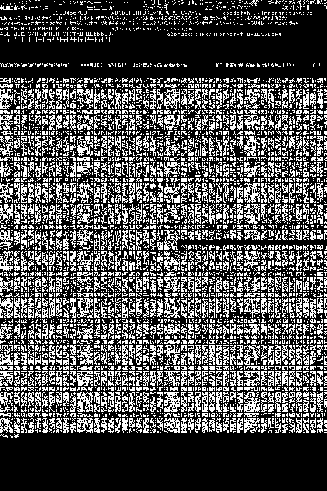

Ｘ１フォント＆美咲フォント描画
【随時更新】ロシア ウクライナに軍事侵攻（28日の動き） 2022年10月28日 19時36分 ロシアによるウクライナに対する軍事侵攻が続いています。 ウクライナの各地でロシア軍とウクライナ軍が戦闘を続けていて、大勢の市民が国外へ避難しています。戦闘の状況や関係各国の外交など、ウクライナ情勢をめぐる28日（日本時間）の動きを随時更新でお伝えします。 ロシアが支配するウクライナ南部のヘルソン州ではウクライナ軍が領土の奪還に向けて中心都市ヘルソンに部隊を進めているとみられ、州の西部ではロシア軍が撤退を始めたと伝えられているほか、ロシア側がヘルソンの住民を東側へ強制的に移住させています。
～概要～
～2022/10/28 フォント描画サンプル
320x180の画面に描画して、640x360に拡大
美咲フォント(sjis第一・第二水準漢字2000文字ほど)
X1フォント(asciiカナ含む256文字ほど)
